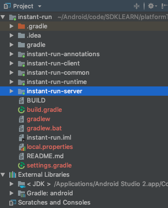
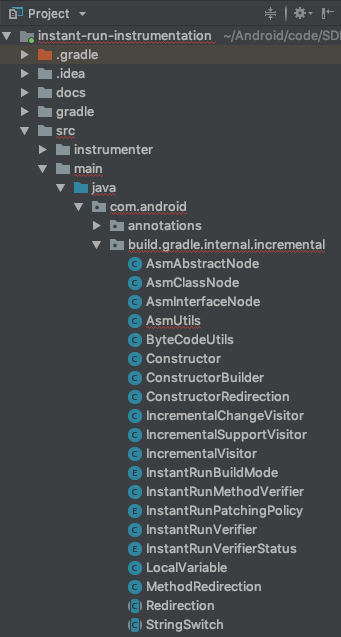

前面的文章分析了Instant Run的原理，大概说下前情提要：
Instant Run的作用是使得开发过程中的改动可以不用完整编译并重新安装app就能应用，也就是更快看到改动的实际效果，节省时间。实现的原理是通过修改原先的构建过程在初始编译中实现插桩，在后面的改动中只编译改动的部分，并把产物推送到设备上，并通过植入app中的runtime加载新的变动。
原理篇只讲了原理，没有涉及Instant Run框架的实际代码。既然Android的所有代码都是通过AOSP开源的，话不多说，
Read The Fucxxxx Source Code ——Linus
AOSP的源码是一个极其庞大的工程。正因为它的庞大，google使用基于git开发的版本管理工具repo进行管理。如果把全部开源的源码下下来，得好几十G。实际上我们要看Instant Run相关的代码，只需要下几个相关的git仓库就行，不需要使用repo下完所有源码。
前面提到过，Instant Run的设计需要Android构建工具和Android Studio的配合，所以相关的源码在两个库中。
instant-run目录中apply change架构替代了instant-run，所以最新的代码中看不到instant-run。切到studio-3.2.1这个tag就能看到了在git clone的时候，可能会碰到Timed out错误，这时候需要设置代理：
git config --global http.proxy http://127.0.0.1:1080 # 或者其他你实际使用的代理，比如socks5://127.0.0.1:1086
git config --global https.proxy https://127.0.0.1:1080 # 或者其他你实际使用的代理，比如socks5://127.0.0.1:1086下载完了记得把代理去掉，以免影响后续git的使用
git config --global --unset http.proxy
git config --global --unset https.proxy前面clone下来的tools/base切换到studio-3.2.1这个tag
选择使用Android Studio阅读instant-run框架的源码。
进到instant-run目录下，此时内容如下：
.
├── BUILD
├── README.md
├── instant-run-annotations
│ ├── BUILD
│ ├── android.sdktools.instant-run-annotations.iml
│ ├── build.gradle
│ └── src
├── instant-run-client
│ ├── android.sdktools.instant-run-client.iml
│ ├── build.gradle
│ └── src
├── instant-run-common
│ ├── android.sdktools.instant-run-common.iml
│ ├── build.gradle
│ └── src
├── instant-run-runtime
│ ├── BUILD
│ ├── build.gradle
│ ├── instant-run-runtime.iml
│ └── src
├── instant-run-server
│ ├── AndroidManifest.xml
│ ├── BUILD
│ ├── build.gradle
│ ├── instant-run-server.iml
│ ├── project.properties
│ └── src
└── instant-run.iml可以看到，instant-run框架的设计清晰地分成了annotations、client、common、runtime、server这几个模块。实际这是一个C/S架构，具体后面分析。这几个模块下都有build.gradle，分别可以看做是一个gradle管理的项目。为了方便阅读，我们在AS中打开时希望这几个模块在同一个gradle项目中。
wrapper任务。（这需要电脑上装有gradle，对于Android开发来说，gradle是必备的）setting.gradle，里面加上include ':instant-run-annotations', ':instant-run-client', ':instant-run-common', ':instant-run-runtime', ':instant-run-server'compile project(':base:instant-run:instant-run-runtime')改成compile project(':instant-run-runtime')的改法改掉各个build.gradle中的依赖，provide files(androidJar)改成compile files(androidJar)，去掉各种testCompile的依赖，去掉apply plugin: 'jacoco-tools-base'
同样可以通过修改build.gradle来使用AS阅读，这里就不赘述了。

build-system中就是Android gradle插件的全部代码。
adt/idea源码项目中的代码过多，也不需要细读，直接使用sublime text打开，善用搜索就行。
参照原理篇交叉阅读效果更佳。仅分析hotswap相关代码。
原理篇分析过了，instant run需要接入构建过程，把框架中的server和runtime部分打到app中。下面看下AS是怎么通知gradle插件做这个事情的。
在项目的build.gradle中加上
println getGradle().getStartParameter()正常run应用，在AS底部的build的tab就会看到输出：
StartParameter{taskRequests=[DefaultTaskExecutionRequest{args=[:app:assembleDebug],projectPath='null'}], excludedTaskNames=[], currentDir=/Users/wuyi/Android/code/demo/Instantruntest, searchUpwards=true, projectProperties={android.optional.compilation=INSTANT_DEV,FULL_APK, android.injected.build.density=xxhdpi, android.injected.coldswap.mode=MULTIAPK, android.injected.build.api=22, android.injected.invoked.from.ide=true, android.injected.build.abi=arm64-v8a,armeabi-v7a,armeabi, android.injected.restrict.variant.name=debug, android.injected.restrict.variant.project=:app}, systemPropertiesArgs={}, gradleUserHomeDir=/Users/wuyi/.gradle, gradleHome=/Users/wuyi/.gradle/wrapper/dists/gradle-4.6-all/bcst21l2brirad8k2ben1letg/gradle-4.6, logLevel=LIFECYCLE, showStacktrace=INTERNAL_EXCEPTIONS, buildFile=null, initScripts=[], dryRun=false, rerunTasks=false, recompileScripts=false, offline=false, refreshDependencies=false, parallelProjectExecution=true, configureOnDemand=false, maxWorkerCount=4, buildCacheEnabled=false, interactive=false}这就是AS启动gradle的命令和全部参数。注意projectProperties={android.optional.compilation=INSTANT_DEV,FULL_APK,这句，这里就表示开启instant-run的支持。到了android gradle插件的执行逻辑里，会被转成如下枚举定义，分别表示不同的编译类型：
package com.android.builder.model;
/**
* enum describing possible optional compilation steps. This can be used to turn on java byte code
* manipulation in order to support instant reloading, or profiling, or anything related to
* transforming java compiler .class files before they are processed into .dex files.
*/
public enum OptionalCompilationStep {
/**
* presence will turn on the InstantRun feature.
*/
INSTANT_DEV,
/**
* Force rebuild of cold swap artifacts.
*
* <p>Dex files and/or resources.ap_ for ColdswapMode.MULTIDEX and some split APKs for
* ColdswapMode.MULTIAPK.
*/
RESTART_ONLY,
/**
* Force rebuild of fresh install artifacts.
*
* <p>A full apk for ColdswapMode.MULTIDEX and all the split apks for ColdswapMode.MULTIAPK.
*/
FULL_APK,
}如果没有这些参数，就不会干涉正常的build的过程。
然后，我们知道，为了支持后续加载热更新，instant-run框架的部分代码会被打到我们的apk包里。这个事情是AS“偷偷”地做的。Android的gradle插件发布的时候包含了instant-run的jar包，build的时候再从里面解压出来放到特定位置然后打到我们app里。可以在app/build/intermediates/incremental-runtime-classess/下找到instant-run-jar。

com.android.build.gradle.tasks.ir.FastDeployRuntimeExtractorTask类负责从gradle插件的jar包中把instant-run-server.jar提取出来放到build目录下：
/ we could just extract the instant-runtime jar and place it as a stream once we
// don't have to deal with AppInfo replacement.
public void extract() throws IOException {
URL fdrJar =
FastDeployRuntimeExtractorTask.class.getResource(
"/instant-run/instant-run-server.jar");
if (fdrJar == null) {
throw new RuntimeException("Couldn't find Instant-Run runtime library");
}
...找到我们本地gradle的缓存中Android插件的jar包(通常在/Users/wuyi/.gradle/caches/modules-2/files-2.1/com.android.tools.build/gradle/x.y.z/md5/gradle-x.y.z.jar)解压下就能验证里面确实有instant-run-server.jar
build结束后，生成的apk包的位置跟普通build过程的位置不一样，这个区别可以在com.android.build.gradle.internal.scope.VariantScopeImpl中看到，这里指定了build结束后AS自动安装apk包的位置：
/**
* Obtains the location where APKs should be placed.
*
* @return the location for APKs
*/
public File getApkLocation() {
String override = globalScope.getProjectOptions().get(StringOption.IDE_APK_LOCATION);
File defaultLocation =
getInstantRunBuildContext().isInInstantRunMode()
? getDefaultInstantRunApkLocation()
: getDefaultApkLocation();
File baseDirectory =
override != null && !variantData.getType().isHybrid()
? globalScope.getProject().file(override)
: defaultLocation;
return new File(baseDirectory, getVariantConfiguration().getDirName());
}每次build的产物和类型会被记录下来，以便AS和gradle插件判断要执行的动作。实际存储为build.info.xml文件，可以在intermediates/build-info目录下找到。
在AS端，com.android.tools.idea.fd.gradle.InstantRunGradleUtils#getBuildInfo方法负责读取这个信息，实际会调用到instant-run包里的InstantRunBuildInfo自身的解析方法。
public static InstantRunBuildInfo getBuildInfo(@NonNull AndroidModuleModel model) {
File buildInfo = getLocalBuildInfoFile(model);
if (!buildInfo.exists()) {
return null;
}
String xml;
try {
xml = Files.toString(buildInfo, Charsets.UTF_8);
}
catch (IOException e) {
return null;
}
return InstantRunBuildInfo.get(xml);
}加载patch时需要有一个AppPathLoaderImpl类实现AbstractPatchesLoaderImpl的getPatchedClasses方法，指定实际被修复的类，生成逻辑如下：
// com.android.build.gradle.internal.transforms.InstantRunTransform
/**
* Use asm to generate a concrete subclass of the AppPathLoaderImpl class.
* It only implements one method :
* String[] getPatchedClasses();
*
* The method is supposed to return the list of classes that were patched in this iteration.
* This will be used by the InstantRun runtime to load all patched classes and register them
* as overrides on the original classes.2 class files.
*
* @param patchFileContents list of patched class names.
* @param outputDir output directory where to generate the .class file in.
*/
private static void writePatchFileContents(
@NonNull ImmutableList<String> patchFileContents, @NonNull File outputDir, long buildId) {
ClassWriter cw = new ClassWriter(0);
MethodVisitor mv;
cw.visit(Opcodes.V1_6, Opcodes.ACC_PUBLIC + Opcodes.ACC_SUPER,
IncrementalVisitor.APP_PATCHES_LOADER_IMPL, null,
IncrementalVisitor.ABSTRACT_PATCHES_LOADER_IMPL, null);
// Add the build ID to force the patch file to be repackaged.
cw.visitField(Opcodes.ACC_PUBLIC + Opcodes.ACC_STATIC + Opcodes.ACC_FINAL,
"BUILD_ID", "J", null, buildId);
{
mv = cw.visitMethod(Opcodes.ACC_PUBLIC, "<init>", "()V", null, null);
mv.visitCode();
mv.visitVarInsn(Opcodes.ALOAD, 0);
mv.visitMethodInsn(Opcodes.INVOKESPECIAL,
IncrementalVisitor.ABSTRACT_PATCHES_LOADER_IMPL,
"<init>", "()V", false);
mv.visitInsn(Opcodes.RETURN);
mv.visitMaxs(1, 1);
mv.visitEnd();
}
{
mv = cw.visitMethod(Opcodes.ACC_PUBLIC,
"getPatchedClasses", "()[Ljava/lang/String;", null, null);
mv.visitCode();
mv.visitIntInsn(Opcodes.BIPUSH, patchFileContents.size());
mv.visitTypeInsn(Opcodes.ANEWARRAY, "java/lang/String");
for (int index=0; index < patchFileContents.size(); index++) {
mv.visitInsn(Opcodes.DUP);
mv.visitIntInsn(Opcodes.BIPUSH, index);
mv.visitLdcInsn(patchFileContents.get(index));
mv.visitInsn(Opcodes.AASTORE);
}
mv.visitInsn(Opcodes.ARETURN);
mv.visitMaxs(4, 1);
mv.visitEnd();
}
cw.visitEnd();
byte[] classBytes = cw.toByteArray();
File outputFile = new File(outputDir, IncrementalVisitor.APP_PATCHES_LOADER_IMPL + ".class");
try {
Files.createParentDirs(outputFile);
Files.write(classBytes, outputFile);
} catch (IOException e) {
throw new RuntimeException(e);
}
}上面这部分主要讲了一些AS和gradle插件配合相关的源码。
下面重点关注下实际插桩的实现。
插桩的代码在上面提到的build-system/instant-run-instrumentation，实际的实现是通过ASM直接操作字节码。
ASM操作字节码的代码都是通过各种助记符操作，不易阅读。
IncrementalSupportVisitor负责操作原始代码，修改为有插桩的代码
IncrementalChangeVisitor负责把改动的代码生成patch，实际就是{原始类名}$override
这两个类的逻辑在gradle插件的com.android.build.gradle.internal.transforms.InstantRunTransform中被调用。gradle插件区分了要处理的类是变动过、新增、删除、还是没变。
先看下IncrementalSupportVisitor：
主要工作就是插入$change变量，和重定向所有方法到$override上
// IncrementalSupportVisitor.java
/**
* Ensures that the class contains a $change field used for referencing the IncrementalChange
* dispatcher.
*
* <p>Also updates package_private visibility to public so we can call into this class from
* outside the package.
*/
public void visit(int version, int access, String name, String signature, String superName,
String[] interfaces) {
visitedClassName = name;
visitedSuperName = superName;
isInterface = (access & Opcodes.ACC_INTERFACE) != 0;
int fieldAccess =
isInterface
? Opcodes.ACC_PUBLIC
| Opcodes.ACC_STATIC
| Opcodes.ACC_SYNTHETIC
| Opcodes.ACC_FINAL
: Opcodes.ACC_PUBLIC
| Opcodes.ACC_STATIC
| Opcodes.ACC_VOLATILE
| Opcodes.ACC_SYNTHETIC
| Opcodes.ACC_TRANSIENT;
// when dealing with interfaces, the $change field is an AtomicReference to the CHANGE_TYPE
// since fields in interface must be final. For classes, it's the CHANGE_TYPE directly.
if (isInterface) {
super.visitField(
fieldAccess,
"$change",
getRuntimeTypeName(Type.getType(AtomicReference.class)),
null,
null);
} else {
super.visitField(fieldAccess, "$change", getRuntimeTypeName(CHANGE_TYPE), null, null);
}
access = transformClassAccessForInstantRun(access);
super.visit(version, access, name, signature, superName, interfaces);
}这个方法插入了public static volatile transient com.android.tools.ir.runtime.IncrementalChange $change
// Redirection.java
/**
* Adds the instructions to do a generic redirection.
* <p>
* Note that the generated bytecode does not have a direct translation to code, but as an
* example, the following code block gets inserted.
* <code>
* if ($change != null) {
* $change.access$dispatch($name, new object[] { arg0, ... argsN })
* $anyCodeInsertedbyRestore
* }
* $originalMethodBody
*</code>
* @param mv the method visitor to add the instructions to.
* @param change the local variable containing the alternate implementation.
*/
void redirect(GeneratorAdapter mv, int change) {
// code to check if a new implementation of the current class is available.
Label l0 = new Label();
mv.loadLocal(change);
mv.visitJumpInsn(Opcodes.IFNULL, l0);
doRedirect(mv, change);
// Return
if (type == Type.VOID_TYPE) {
mv.pop();
} else {
ByteCodeUtils.unbox(mv, type);
}
mv.returnValue();
// jump label for classes without any new implementation, just invoke the original
// method implementation.
mv.visitLabel(l0);
}这个方法插入做了重定向的工作。
还有一个值得一提的是，{原始类名}$override类重新分发方法是通过方法签名来区分的，通过StringSwitch，又把方法签名的字符串比较变成了签名hash后的switch case，应该能节省大量的方法签名常量的储存成本。
其他不一一列举了。
产物生成了，还需要实现把产物push到设备上，并修改之前插桩时预留的参数。
前面说过，从instant-run代码的分包很容易看出它是C/S架构的。在patch注入这个过程中，server驻留在app中，client通过AS被调用，通过pushPatches完成patch生效。
server从InstantRunContentProvider的onCreate生命周期入口开始，关键的代码如下：
private void startServer() {
try {
Thread socketServerThread = new Thread(new SocketServerThread());
socketServerThread.start();
} catch (Throwable e) {
// Make sure an exception doesn't cause the rest of the user's
// onCreate() method to be invoked
if (Log.isLoggable(Logging.LOG_TAG, Log.ERROR)) {
Log.e(Logging.LOG_TAG, "Fatal error starting Instant Run server", e);
}
}
}
private class SocketServerThread extends Thread {
public void run() {
if (POST_ALIVE_STATUS) {
final Handler handler = new Handler();
Timer timer = new Timer();
TimerTask task =
new TimerTask() {
public void run() {
handler.post(
new Runnable() {
public void run() {
Log.v(
Logging.LOG_TAG,
"Instant Run server still here...");
}
});
}
};
timer.schedule(task, 1, 30000L);
}
while (true) {
try {
LocalServerSocket serverSocket = Server.this.serverSocket;
if (serverSocket == null) {
break; // stopped?
}
LocalSocket socket = serverSocket.accept();
if (Log.isLoggable(Logging.LOG_TAG, Log.VERBOSE)) {
Log.v(
Logging.LOG_TAG,
"Received connection from IDE: spawning connection thread");
}
SocketServerReplyThread socketServerReplyThread = new SocketServerReplyThread(
socket);
socketServerReplyThread.run();
if (wrongTokenCount > 50) {
if (Log.isLoggable(Logging.LOG_TAG, Log.VERBOSE)) {
Log.v(
Logging.LOG_TAG,
"Stopping server: too many wrong token connections");
}
Server.this.serverSocket.close();
break;
}
} catch (Throwable e) {
if (Log.isLoggable(Logging.LOG_TAG, Log.VERBOSE)) {
Log.v(
Logging.LOG_TAG,
"Fatal error accepting connection on local socket",
e);
}
}
}
}
}在新线程里启动一个socket，等待client的数据。类似其他一些模型，首先会先校验有效性。一接到数据会先校验一个magicNumber和version，然后就是各种类型的数据传递：
// Server.java
long magic = input.readLong();
if (magic != PROTOCOL_IDENTIFIER) {
Log.w(Logging.LOG_TAG, "Unrecognized header format " + Long.toHexString(magic));
return;
}
int version = input.readInt();
// Send current protocol version to the IDE so it can decide what to do
output.writeInt(PROTOCOL_VERSION);
if (version != PROTOCOL_VERSION) {
Log.w(
Logging.LOG_TAG,
"Mismatched protocol versions; app is "
+ "using version "
+ PROTOCOL_VERSION
+ " and tool is using version "
+ version);
return;
}
while (true) {
int message = input.readInt();
switch (message) {
case MESSAGE_EOF:
然后InstantRunClient#pushPatches在AS端被调用，向上面server的socket传递数据，实际是通过adb做到的。patch文件通过bytes写入socket的server端，消息类型的判断在上面的代码里，文件数据流的读取在ApplicationPatch#read中，文件数据类流的写在ApplicationPatchUtil#write
private static void write(@NonNull DataOutputStream output, @NonNull ApplicationPatch change)
throws IOException {
output.writeUTF(change.path);
byte[] bytes = change.data;
output.writeInt(bytes.length);
output.write(bytes);
}patch传输完后，就会通过AbstractPatchesLoaderImpl的load方法实际加载使patch生效。
// AbstractPatchesLoaderImpl
public boolean load() {
for (String className : getPatchedClasses()) {
try {
ClassLoader cl = getClass().getClassLoader();
Class<?> aClass = cl.loadClass(className + "$override");
Object o = aClass.newInstance();
Class<?> originalClass = cl.loadClass(className);
Field changeField = originalClass.getDeclaredField("$change");
// force the field accessibility as the class might not be "visible"
// from this package.
changeField.setAccessible(true);
Object previous =
originalClass.isInterface()
? patchInterface(changeField, o)
: patchClass(changeField, o);
// If there was a previous change set, mark it as obsolete:
if (previous != null) {
Field isObsolete = previous.getClass().getDeclaredField("$obsolete");
if (isObsolete != null) {
isObsolete.set(null, true);
}
}
if (logging != null && logging.isLoggable(Level.FINE)) {
logging.log(Level.FINE, String.format("patched %s", className));
}
} catch (Exception e) {
if (logging != null) {
logging.log(
Level.SEVERE,
String.format("Exception while patching %s", className),
e);
}
return false;
}
}
return true;
}逻辑不复杂，就是把所有有代码改动的类的$override通过反射替换掉。改动类通过getPatchedClasses()提供，getPatchedClasses的实际实现签名说过是由gradle具体生成的。
一旦$override替换成了新的改动类，那么改动就生效了。可以再看下原理篇的分析。
下一篇尝试通过Instant Run的原理，一步一步实现一个自己的hotfix框架。